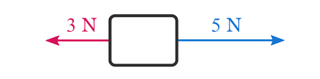
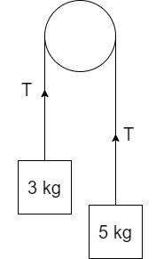

A force is a push or pull on an object due to an interaction. It can cause an object to accelerate, slow down, remain in place, or change direction.
The SI unit of force is Newton (N), named after Sir Isaac Newton, the guy who basically laid down the law(s) — three of them, to be exact.
Types of Forces
Gravitational Force — Pull due to gravity.
Normal Force — Perpendicular contact force from a surface.
Tension Force — Force transmitted through a string, rope, etc.
Frictional Force — Force resisting relative motion.
Applied Force — Force applied by a person or another object.
Important Equations
Newton’s Second Law: \( F = ma \)
Weight: \( W = mg \)
Net Force: \( F_{\text{net}} = \sum F = ma \)
A 3N force acts on a block to the left direction and another 5N force acts on a block to the right direction. What is its resultant force?

Resultant Force = \(5N - 3N\)
Resultant Force = \(2N\)
A girl applies a 10N force to a 5kg block. Find the acceleration
\(F = ma\)
\(a = \frac{F}{m}\)
\(a = \frac{10 \,N}{5 \,kg} = 2 \:ms^{-2}\)
Acceleration = \(2\:ms^{-2}\)
A boy applies a 20N force to a body with unknown mass. Its acceleration is found to be \(4\:ms^{-2}\)
\(F = ma\)
\(m = \frac{F}{a}\)
\(m = \frac{20\,N}{4\,ms^{-2}} = 5 \:kg \)
Mass = \(5\:kg\)
A coconut with a mass 4 kg is travelling at a uniform acceleration of \(10\:ms^{-2}\). What is the resulting force acting on it?
\(F = ma\)
\(F = 4\,kg \times 10\,ms^{-2} = 40\,N\)
Resulting Force = \(40\,N\)
A 40 kg object is in an elevator accelerating upward at \(2\,ms^{-2}\). What is the apparent weight of the object?
\(\uparrow \: Forces: F_N - mg = ma\)
\(F_N = Apparent \;Weight\)
\(F_N - mg = ma\)
\(F_N = m\,(g+a)\)
\(F_N= 40\,kg \times (9.8+2)ms^{-2} = 472\, N \)
Apparent Weight = \(472\,N\)
Friction
Try rubbing your hands. Feel the warmth? That's friction. Now add some water or oil — less heat. Why? Because lubricants reduce friction. This is the same concept that keeps cars from overheating and your joints from creaking like a haunted house.
Friction acts parallel to the surfaces in contact and opposes motion.
Static Friction: \( F_s \le \mu_s N \) (prevents motion)
Kinetic Friction: \( F_k = \mu_k N \) (during motion)
Rolling Friction: Occurs with wheels or rolling objects
Where \(\mu_k\), \( \mu_s\) and N represent static friction coefficient, kinetic friction coeffiecient and normal force respectively
A 5 kg block rests on a horizontal surface with a coefficient of static friction, \(\mu_s = 0.4\) and a coefficient of kinetic friction, \(\mu_k = 0.3\). What is the maximum force that can be applied without moving the block?
Mass: 10 kg, \( \mu_s = 0.4 \)
Normal Force: \( N = mg = 10 \times 9.8 = 98\,\text{N} \)
Maximum Friction Force: \( F_k = \mu_s N = 0.4 \times 98 = 39.2\,\text{N} \)
Maximum Force that can be applied: \( 39.2\:N\)
A 20 kg crate is pulled with a force of \(100 N\) at an angle of \(30^{\circ}\) above the horizontal on a rough surface (\(\mu_k = 0.25\)). Find the acceleration of the crate. (Assume g = \(10\:ms^{-2}\))
A 5 kg block is connected to a hanging 3 kg mass over a frictionless pulley. The coefficient of kinetic friction between the block and the table is 0.2. Find the acceleration of the system.
A box at rest on a table has a weight of 50 N. What is the normal force exerted by the table on the box?
Find the acceleration of a 2kg object when given a 8N force to the east and a 4N force to the west.
A car is moving at constant velocity on a highway. What can be said about the net force acting on it?
A 12 kg object is being pulled along level ground at at constant velocity by a horizontal force of 38.0 N. What is the coefficient of kinetic friction between the box and the floor?
The horizontal pulling force on the box in the above problem is increased to 55.0 N. What is the box's acceleration?
A system of two masses (5 kg and 3 kg) connected by a rope passes over a frictionless pulley. Find the acceleration of the system.

A block of wood with mass 1kg is clamped to a vertical board. What is the minimum vertical force needed to move the block upward? \(\mu_s = 0.30\)
A 15.0 kg box is being pulled along level ground by a 75.0 N force that is directed at an angle of \(20^{\circ}\) above the horizontal. The coefficient of kinetic friction is 0.230. What is the acceleration of the box?
If the coefficient of static friction between your sneakers and the ground is 0.800, what is the largest angle incline you could stand on without slipping
A box slides down a \(45^{\circ}\) incline with an acceleration of \(1.50\:ms^{-2}\) down the incline. What is the coefficient of kinetic friction between the block and the incline?